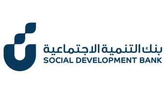
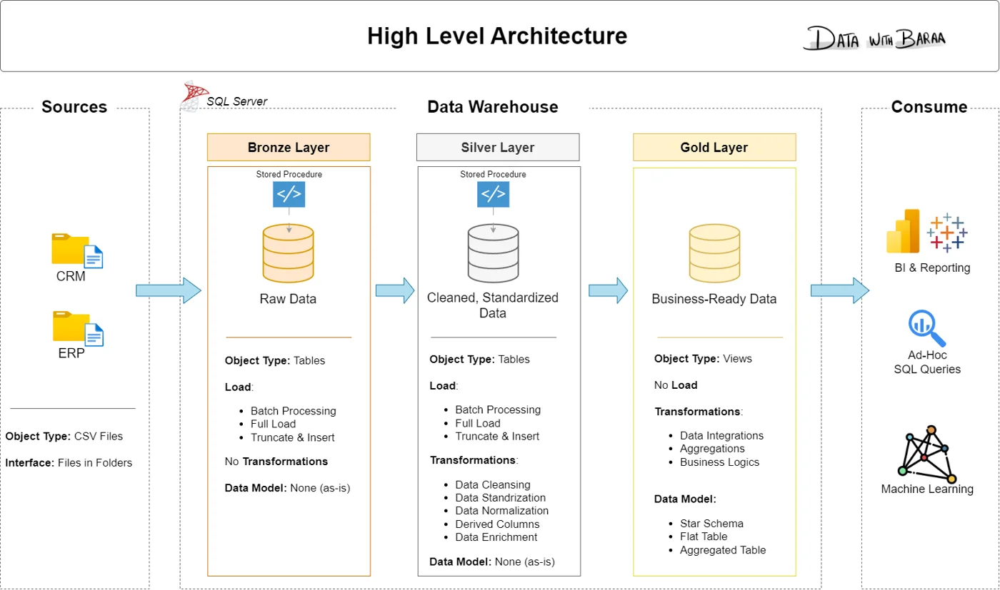

LLM apps
Prompting, structured JSON output, tool calling and cost control.
Available · remote & international
AI Engineer and PMP®-certified PMO Team Lead. I put assistants on top of governed data so leaders can ask their portfolio a question and get the right number, in English or Arabic.
Pulse: an AI assistant over 93 Power BI KPIs, in English & Arabic.
Watch demo · 1:30 →Cabinet & Presidency reporting
Explore →SQL · PostgreSQL · Power BI · 4D
Explore →Trusted by



Executives ask about revenue, costs, collections and overdue items by voice or text, in English or Arabic. Answers come from the same 93 KPIs as the Power BI model, behind a secure sign-in.
Prompting, structured JSON output, tool calling and cost control.
Embeddings, pgvector, retrieval with citations, Arabic text handling.
LangGraph agents that query SQL and documents, with evaluation sets.
Build with
Project data from Zoho, Odoo, Smartsheet and Airtable lands in one governed database.
Earned value (SPI, CPI) and progress against the planned-to-date figure, every week.
Instant email alerts when a project slips or a submission is missing.
AI drafts the one-page executive report: what's on track, what needs focus.
Leaders question the portfolio in plain language through the assistant.
Periodic portfolio reports and issue alerts now run on their own across the project lifecycle.
Every AI use case has an owner, a test set and a review step. Nothing reaches the CEO unchecked.
Arweqah Company · Apr 2024 – Present
Dar Al-Handasah · Oct 2021 – Apr 2024
Standards, templates and roles rolled out PMO-wide.
SPI, CPI and EAC tracked portfolio-wide.
Registers, heat maps and early warnings.
Plan vs actual on one page per project.
A 3D building driven by its schedule. Quantities, S-curve and cash flow roll up from the same model.

Bronze → Silver → Gold, CRM + ERP into a star schema, with quality tests.
GitHub ↗Earned value, RAG status, slippage and a risk heat map for 24 projects.
GitHub ↗Ad → lead → sale funnel, ROAS, cohorts and attribution.
GitHub ↗PMP certified; building LLM assistants, RAG and agents on the platforms I designed.
8-person PMO with 2 AI engineers, SAR 250M portfolio for Saudi government clients.
10,000+ projects, 200+ engineers, weekly Cabinet and Presidency reporting.
BI Specialist: PostgreSQL data layer, Power BI Server, fact and dimension models.
Four Seasons Madinaty and Dubai Creek Towers in Revit, Navisworks and Dynamo.
B.Sc. Civil Engineering, Cairo University; internships with Orascom, CCC and Dorra.
Core skills: SQL · PostgreSQL · SQL Server · Data Modeling · ETL / ELT · Python · pandas · Power BI · DAX · Power Query · Tableau · Power Apps · Power Automate · LLMs · RAG · AI Agents · PMO Governance · Earned Value · Risk Management · Primavera P6 · MS Project · Arabic (native) · English (professional)
Work with me
Hiring for an AI, PMO or data role, or need a dashboard with an assistant on top? Tell me what you're working on and I'll set up a short live demo.